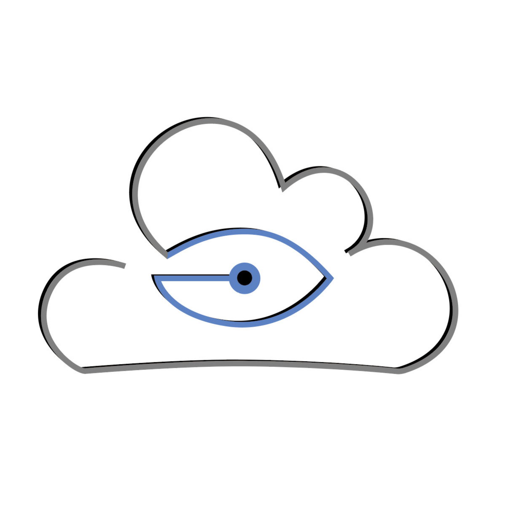
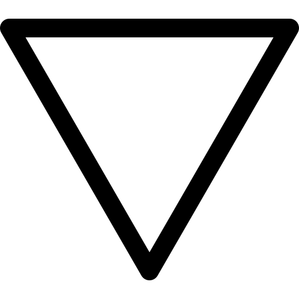
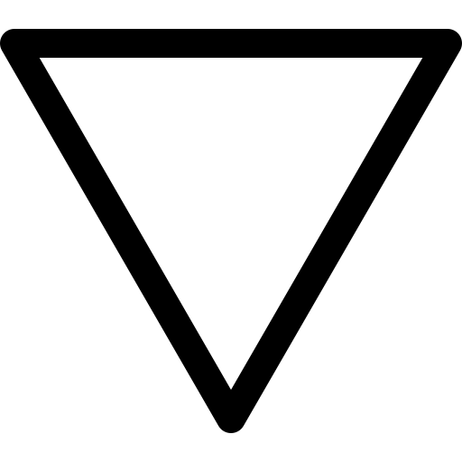

"I am always working to align my values and my actions. In my professional life, I try to have the best
of me and my colleagues using trust and acceptation to stimulate passion and pride about the tasks.
My experiences in education, academic and industrial R&D, living alone in France and multi-domain studies
taught me don't be scared about complex projects, developed new skills, deal with big changes and work
with a multicultural team. I believe in constant learning and shared experiences. I feel comfortable
working in academic and industrial environments."
"Mechatronic Engineer and master's student developing research on safety in physical human-robot
interaction. An academic career built with excellence as a result of effort, dedication, and the ability
to deal with complex situations in a good way.
Since I do believe the best knowledge is the one that
helps the world to become a better place, I'm always looking for an opportunity to put into practice what
I have learned contributing to the development of our society."
USP introduced me to unprecedented scale and diversity of opportunities and ways of thinking, which pushed
me to expand, challenge, and adjust my worldview.
My group work, in curricular activities, monitoring and extension groups, taught me that technical knowledge
is very important, but also that the lack of it can be supplied by the desire to learn and that people
management can be even more valuable than prior knowledge, in different situations.
My experiences in the university environment, while making me more humble in relation to my knowledge,
motivated me to always want to improve as a professional and as a person.
My involvement in USP's technology and innovation initiatives exercised my creativity, aroused my curiosity
for learning and understanding the world, and made me realize that to make the world a little better, it is
not always necessary to create an extremely complex product. These experiences strengthened my tolerance to
adversity and taught me a lot about my capacity and my limits.
In addition to providing fertile soil for me to create a love for learning and facing new challenges, USP
surrounded me with inspiring friends and colleagues.
USP introduced me to unprecedented scale and diversity of opportunities and ways of thinking, which pushed
me to expand, challenge, and adjust my worldview.
My group work, in curricular activities, monitoring and extension groups, taught me that technical knowledge
is very important, but also that the lack of it can be supplied by the desire to learn and that people
management can be even more valuable than prior knowledge, in different situations.
My experiences in the university environment, while making me more humble in relation to my knowledge,
motivated me to always want to improve as a professional and as a person.
My involvement in USP's technology and innovation initiatives exercised my creativity, aroused my curiosity
for learning and understanding the world, and made me realize that to make the world a little better, it is
not always necessary to create an extremely complex product. These experiences strengthened my tolerance to
adversity and taught me a lot about my capacity and my limits.
In addition to providing fertile soil for me to create a love for learning and facing new challenges, USP
surrounded me with inspiring friends and colleagues.


If you wanna get in touch, send an email to andre.94.cavalcante@gmail.com or feel free to use any of the following options:
 
